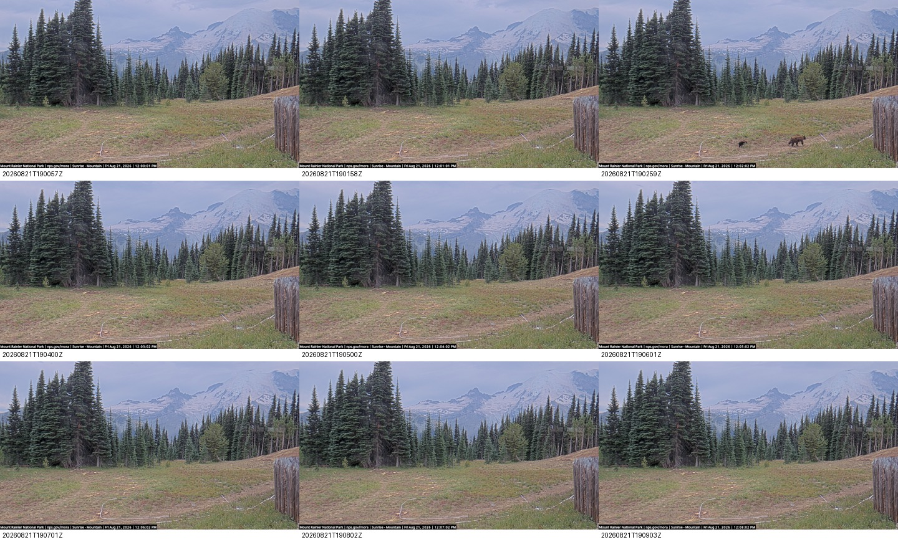
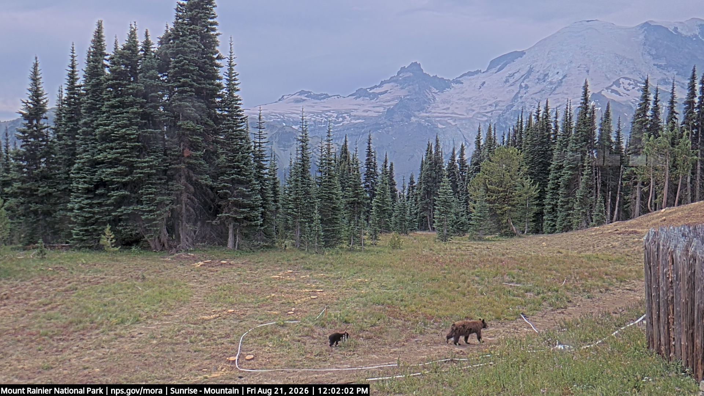

{kind=link}

Bear Event Context
The reviewed sequence spans 2026-08-21T19:00:57Z through 2026-08-21T19:09:03Z at the lake's sampled cadence. The two bears are clearest in the 19:02:59Z source frame.
Reviewed MegaDetector results for the NPS Sunrise Mountain fixed camera across August 2026. This page leads with the strongest human-reviewed wildlife evidence found in the August pass: a black bear pair on 2026-08-21 and a clear deer on 2026-08-25. It also documents why the raw high-confidence list is not the same thing as a wildlife list.

Timestamp: 2026-08-21T19:02:59Z
Evidence: larger bear and smaller bear visible together in the lower meadow.
Source frame: sunrise_mountain_20260821T190259Z.jpg
This event was recovered from the source-window review after uploaded clips pointed to the 19:03-19:04 GMT window. The current fixed-camera filter did not preserve it correctly as a public candidate.

Timestamp: 2026-08-25T02:16:26Z
Model: MegaDetector V6 MIT, animal confidence 0.820
Source frame: sunrise_mountain_20260825T021626Z.jpg
The model surfaced the frame; the deer label is based on visual review of the full-frame context.

The reviewed sequence spans 2026-08-21T19:00:57Z through 2026-08-21T19:09:03Z at the lake's sampled cadence. The two bears are clearest in the 19:02:59Z source frame.

Unannotated source frame retained beside the boxed review image so the bear event can be judged in context.

The reviewed sequence spans 2026-08-25T02:10:22Z through 2026-08-25T02:22:31Z. The animal is clearly visible in the 02:16:26Z frame; nearby frames are mostly empty.

Unannotated source frame retained beside the boxed review image so the detection can be judged in context.
The August backfill changed the Sunrise picture. The previous 2026-08-28 to 2026-09-01 page was dominated by weak foggy meadow-edge candidates. The full-month review found better evidence, especially the 2026-08-21 bears and the 2026-08-25 deer.
Many top-confidence animal boxes in the full-month run were people, maintenance activity, or hikers near the camera. Those images are not included in this wildlife gallery. They are counted as part of the model review workload and should inform the next round of filtering.
Pipeline note: the bear event exposed a filtering bug. The visible animals were not correctly promoted by the current fixed-camera candidate filter, while unrelated recurring edge boxes were suppressed as static. Automation should retain source-window evidence around uploaded or detected events before final curation.
| Period | Observed lake coverage | Notes |
|---|---|---|
| 2026-08-01 to 2026-08-05 | 0 frames | No Sunrise Mountain frames present in the lake. |
| 2026-08-06 to 2026-08-29 | 29,581 frames | Data-bearing days analyzed with MegaDetector; several days are partial captures. |
| 2026-08-30 to 2026-08-31 | 0 frames | No Sunrise Mountain frames present in the lake. |
| Metric | Value |
|---|---|
| Raw MegaDetector detections | 9,956 |
| Filtered review candidates | 347 |
| Dark or unusable frames | 11,084 |
| Completed source-day runs | 24 |
| Failed source-day runs | 0 |
MegaDetector was run as a fixed-camera scene-filtering step. It detects candidate animal/person/vehicle boxes; it does not identify species. Species wording on this page is limited to visual review of the displayed evidence. Public display is intentionally conservative: people and maintenance frames are withheld from the wildlife gallery even when the detector scored them highly. The 2026-08-21 bear event was added after source-window review showed that the fixed-camera filter had hidden it from the initial public candidate set.
Rights: Sunrise Mountain webcam imagery is credited to National Park Service, Mount Rainier National Park. See report.json for machine-readable metadata.
{kind=link}